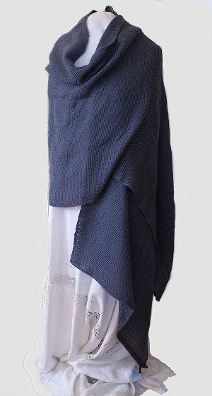

Shawls
Open Weave Knotweed
cotton and wool shawl woven in my signature
open weave has a lovely drape.
I stain the white cotton threads with brown walnut
shells and the wool yarn with a local plant called
" knotweed".
The natural colors remind me of driftwood
on the beach. Goes well with linen.
Size 24 x 88 inches $150
Quantity

Steel Grey Shawl
Merino wool/tencel blend hand woven
into this graceful shawl.
Dry clean only
measures 24 x 94 inches $150
Quantity

Open Weave Sea Foam Shawl
Hand dyed with black walnut shells
cotton yarn is woven together with
wool dyed with locally gathered plants.
Colors vary in warm linen tones.
size 24 by 88 inches $150.
Quanitity

Hit and miss dye pattern creates a natural look.
Asymetrical Wraps

Asymetrical Jewel Wrap
Merino Wool Blend and
Bucle Cotton in jewel tones.
Small Quantity
Medium Quantity
Large Quantity